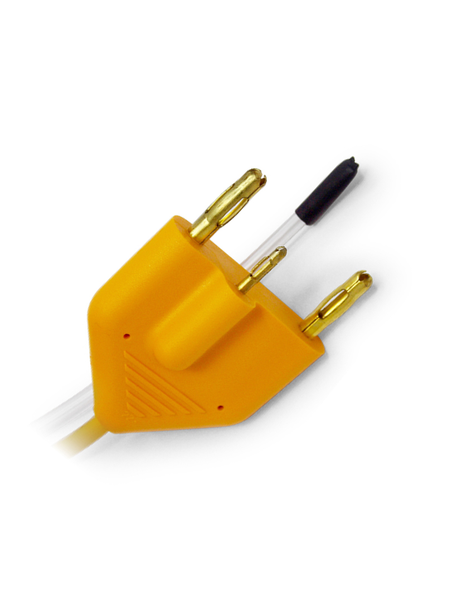
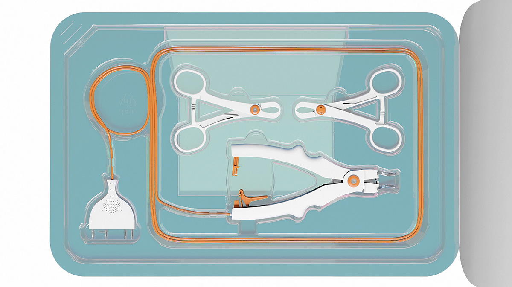

Design Considerations for Single-Use Medical Connectors
Key engineering factors when designing connectors for single-use applications — from materials selection to validation. Covers biocompatibility, sterilization compatibility, and cost drivers.

Key engineering factors when designing connectors for single-use applications — from materials selection to validation. Covers biocompatibility, sterilization compatibility, and cost drivers.

A comprehensive look at medical cable assembly construction, materials, performance requirements, and the reusable vs. disposable decision framework.

When off-the-shelf connectors fall short, custom connectors can improve human factors, reduce lead times, and differentiate your product in the market.

How Gii's global manufacturing model — spanning the US, nearshore Costa Rica, and Asia — creates transparency and quality alignment across the supply chain, and what that means for OEM customers.

A deep-dive into RF ablation connector design options — from overmolded banana plugs to push-pull configurations — and how to optimize for cost without sacrificing reliability.

Single-use or reusable? Locking or non-locking? This step-by-step guide walks through the key decision factors for selecting the right medical connector for your device.

A custom connector solution that enabled a leading orthopedics OEM to scale production while hitting aggressive cost targets and maintaining zero-defect quality standards.

Manufacturing transfers are complex but essential for scaling. This guide covers regulatory, supply chain, process, and quality considerations when moving production to a new partner.

A technical overview of push-pull connector systems used in medical devices — how they work, industry standards, and when to consider purpose-built alternatives.
In the medical device industry, custom-engineered connectors and cable assemblies are crucial to ensuring reliability, regulatory compliance, and cost efficiency across energy-based and diagnostic applications.
Global Interconnect exhibited at MD&M West in Anaheim, California — one of the largest medical device manufacturing events in the US. Recap of conversations, industry trends, and key takeaways from the show floor.
Visit Global Interconnect at MD&M Minneapolis, October 16–17, booth 3540 — exploring custom medical device cable and connector solutions with OEM engineering and supply chain teams.
Custom cable assemblies play a crucial role in the demanding world of medical manufacturing. This article explores how design transparency and supply chain visibility translate to better outcomes for OEMs.
Gii exhibited at MEDevice Boston 2024 — connecting with OEM engineering teams about cable and connector challenges, custom design capabilities, and the nearshore Costa Rica manufacturing option.
A summary of key engineering and design principles for single-use connector development, drawn from Gii's technical webinar — covering materials, testing, validation, and cost drivers.
Global Interconnect, Inc. announces the addition of a new ISO 8 cleanroom facility — expanding sterile and critical medical cable and connector assembly capacity to meet growing OEM demand.
A case study exploring how Global Interconnect partnered with an OEM to develop a reusable surgical device assembly — navigating complex engineering, quality, and supply chain challenges to deliver a production-ready solution.
The fifth edition of The Quarterly Connection — highlights, program updates, and engineering insights from Global Interconnect's team for Q1 2024.
The fourth edition of The Quarterly Connection — highlights, industry news, and program updates from Global Interconnect for Q4 2023.
Global Interconnect announces the appointment of Ken Daignault, President of Daignault Medtech Consulting, as Technical Advisor — bringing additional depth in medical device design and regulatory expertise.
Global Interconnect has been an active trade show participant since 1997. A look back at Gii's 2023 show season — the conversations, themes, and industry signals from the floor.
The third edition of The Quarterly Connection — updates, engineering insights, and highlights from the Gii team for Q3 2023.
Reusable radiofrequency ablation probes were once the standard for pain management — but the market is shifting to single-use. What that means for cable and connector design, validation, and cost.
Gii's core values — developed in 2010 — define the standards and expectations that guide how the company works with OEM partners, manufacturing partners, and its own team.
The second edition of The Quarterly Connection — updates, industry developments, and program highlights from the Gii team for Q2 2023.
Gii's Director of Quality traveled to Asia manufacturing partners to strengthen quality standards, drive supplier development, and ensure alignment with Gii's zero-defect manufacturing principles.
Global Interconnect partners with Materialogic to offer OEM customers enhanced logistics capabilities — improving delivery performance, inventory management, and supply chain visibility.
The first edition of The Quarterly Connection — introducing Gii's new newsletter with company updates, engineering insights, and industry highlights for Q1 2023.
A company was stuck with a supplier unwilling to customize an off-the-shelf push-pull connector. Gii engineered a purpose-built replacement — better performance, lower cost, and no supply chain dependency on an uncooperative vendor.
A personal message from Gii's CEO on why the company's curated network model — rather than a single vertically integrated facility — delivers better outcomes for OEM partners across cost, quality, and flexibility.
When factory closures extended due to COVID-19, Global Interconnect adapted quickly — leveraging its multi-location manufacturing network to maintain continuity for OEM customers.
Human factors and usability engineering continue to be a key FDA focus for new medical device submissions. How cable and connector design decisions affect usability — and how to design for them from the start.
Good design is more than a blueprint. An inside look at how Gii approaches cable and connector design — from requirements gathering and DFM analysis through prototype validation and design freeze.
The world of flexible plastic compounds for disposable medical devices is vast. A breakdown of PVC formulations, their performance characteristics, biocompatibility considerations, and where they fit in cable jacket and overmold applications.

An honest technical look at push-pull connector systems for medical devices — what they do well, where they're overused, and how purpose-built alternatives can deliver the same clinical performance at significantly lower cost.
A personal story from Gii's founder about family, perspective, and the deeper reason behind the company's mission to make high-quality medical devices more accessible and affordable.
UDI (Unique Device Identification) compliance is a regulatory requirement that affects labeling, packaging, and traceability for medical device manufacturers. How Gii supports OEMs in meeting FDA UDI requirements without disrupting production.
Packaging can make or break a client relationship. How packaging decisions for medical cable and connector assemblies affect product protection, regulatory compliance, and the final impression your device makes.
Reusable medical connectors require premium materials, advanced designs, and complex sterilization compatibility. This whitepaper covers the key engineering decisions — from contact design to cleaning cycle durability.
Material selection is one of the most consequential decisions in cable assembly design. A guide to jacket materials, insulation compounds, shielding options, and biocompatibility requirements for medical applications.
Braided cable sleeves and extruded cables are two distinct construction approaches with different performance, cost, and design implications. A practical comparison to help OEMs make the right choice for their application.
A practical primer on electrical connector and contact theory — covering contact resistance, normal force, mating cycles, plating, and the mechanical principles that determine real-world connector reliability.
Choosing between thermoset and thermoplastic materials for medical connector overmolding and cable jackets isn't always straightforward. A breakdown of the trade-offs in performance, processability, cost, and regulatory compliance.
Talk to our engineering team about your project or specific technical needs.
Contact Our Engineers →